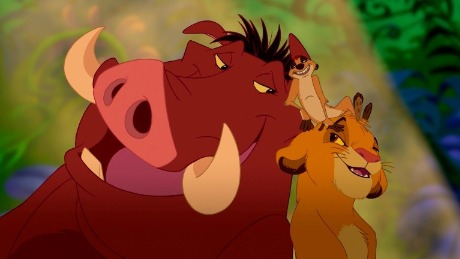

About Pumbaa
Pumbaa is a warthog. He lives in the jungle and helped rescue Simba from the desert. He lives a Hakuna Matata lifestyle.
Pumbaa, Timon, and Simba
Characteristics
- Funny
- Good Singer
- Childish
- Knowlegeable
Pumbaa's Friends
Pumbaa's closest friend is Timon. During the Lion King movie, Pumbaa makes a new friend called Simba. Click on the links below to read more about Pumbaa's friends